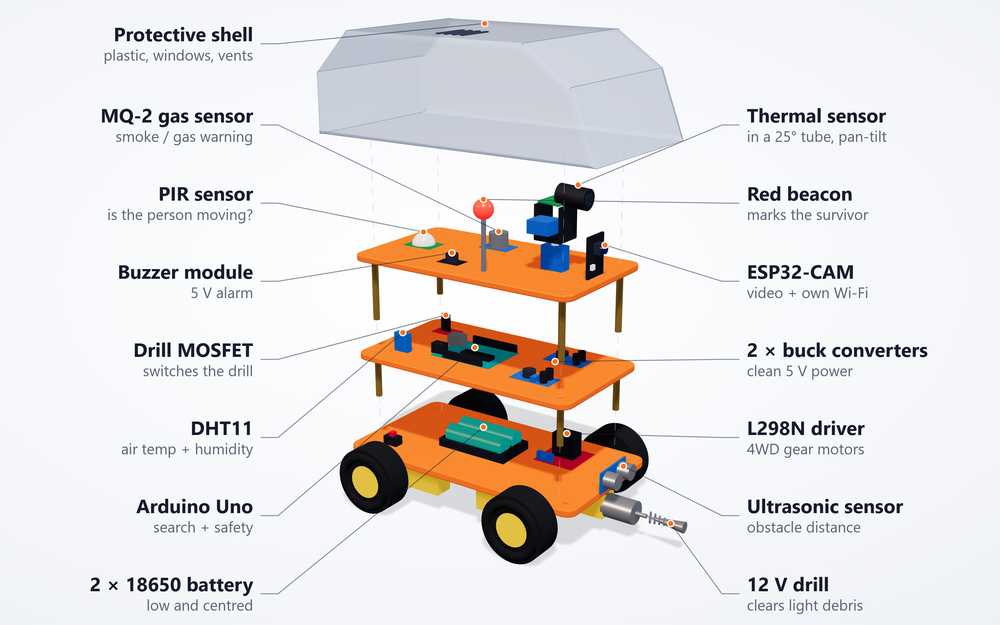
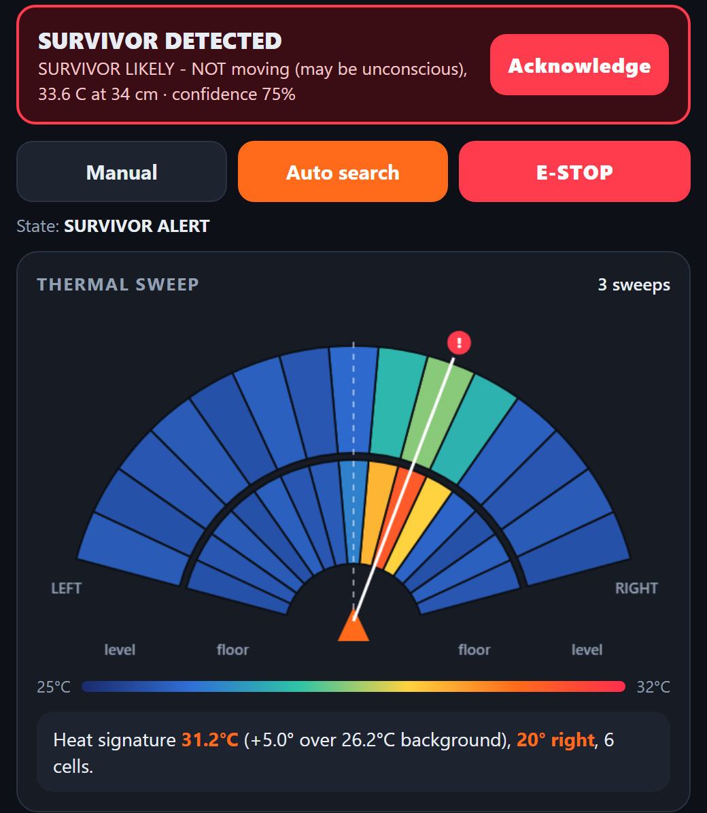

A low-cost rescue rover that goes into collapsed buildings first, finds trapped people by their
body heat, and guides rescuers straight to them, with no internet needed.
After a building collapses, rescuers search blind.
Earthquakes, old buildings giving way, gas explosions and landslides trap people under concrete.
Rescue teams describe the first 72 hours as the most important: after that, the chance of finding someone alive
falls quickly. Yet the first search is still mostly done by people crawling into unstable voids, calling out
and listening.
It is dangerous to go in first
Voids can collapse again, and the air can hold smoke, dust or leaking gas.
Every rescuer who goes in to look is also at risk.
Silent people get missed
Calling out and listening only finds people who can answer. Someone who is
unconscious or too weak to shout makes no sound at all, and they need help most urgently.
It is dark and dusty inside
A normal camera sees very little in a dark gap full of dust or smoke.
A warm body, though, still gives off heat that a thermal sensor can detect.
Good tools are expensive
Handheld thermal cameras start around ₹25,000, thermal drones over ₹1 lakh, and
professional rescue robots and life detectors cost lakhs more. Most local teams can't afford enough of them.
What a first-response team actually needs
Need
How ResQBot answers it
Look inside before a person goes in
A small rover drives in and streams live video to a phone outside.
Find people who can't call for help
It searches by body heat and checks for movement, so a silent person still shows up.
Know who to reach first
A person who is warm but not moving is flagged as top priority.
Know if the air is safe
A smoke and gas sensor warns the team before anyone enters.
Work where there is no network
The robot makes its own Wi-Fi; any phone opens the control page with no app and no internet.
Cost little enough to have several
About ₹4,700 in parts, built from common hobby components.
ResQBot does not replace rescuers. It is a cheap scout that goes first, so
rescuers go in knowing where to dig and what they will face.
ResQBot Mini · Project proposal2
What it helps with
Eight jobs ResQBot does for a rescue team
Every feature exists to save time or keep a rescuer safe.
1 · Finds people by body heat
A thermal sensor on a turning head sweeps left to right and floor to eye
level. Body heat stands out against cold rubble, even in total darkness, dust or light smoke.
2 · Spots unconscious people
A motion sensor checks whether the person moves. "Warm but not moving" is
marked PRIORITY RED, because that person may be unconscious.
3 · Points rescuers the right way
The phone shows which direction the heat came from ("20° right") and how
close it is, so the team knows where to dig instead of searching everywhere.
4 · Keeps rescuers out of danger
The robot takes the first risk. The team stays outside and drives it
from a phone, with a live camera feed and an emergency stop.
5 · Warns about smoke, gas and fire
An MQ-2 sensor raises an alarm for smoke or flammable gas. A spot
far hotter than a body (55 °C or more) is reported as a possible fire, never as a survivor.
6 · Marks the survivor on the spot
When it finds someone, the robot stops beside them, flashes a red beacon
and beeps, so rescuers can find the place in the rubble. The person also hears that help has arrived.
7 · Records every find
Each detection gets a photo with the heat overlay, the time, the temperature and a
triage tag. One tap makes a mission report to hand over or save as a PDF.
8 · Works anywhere, on any phone
No mobile network, internet or app is needed. The robot is its own
Wi-Fi hotspot, and the control page opens in any phone browser. It can even speak alerts aloud.
Who can use it
Fire & rescue
fire stations, NDRF / SDRF and civil-defence teams
Volunteers
disaster-relief NGOs, NCC and NSS units
Industry
factories and warehouses after fire or collapse
Schools
disaster drills and STEM learning
ResQBot Mini · Project proposal3
How it works
One search, step by step
Press Auto search on the phone, and the robot repeats this loop by itself until it finds
someone or is told to stop.
1
Sweep
Two small servos turn the thermal sensor through 15 directions
at two heights (floor and level): a 30-point heat map. A cone-shaped tube narrows the sensor's view to 25°,
so each reading looks at one spot instead of the whole room.
2
Detect
The map is compared with the background temperature. A
patch at least 1.5 °C warmer, covering 2 or more neighbouring points and no hotter than 42 °C, looks like
a body. 55 °C or more is reported as a fire hazard.
3
Turn
The robot knows which direction the warmest point was
in. It turns its whole body to face it and points the sensor straight ahead.
4
Approach
It crawls forward slowly while the ultrasonic sensor
measures the gap, and stops about 35 cm away. It keeps the highest temperature it reads on the way.
5
Confirm
It waits 5 seconds, watching with the motion sensor.
Then it combines everything into a confidence score (below).
6
Alert
60 % or more: survivor likely. The phone shows a red
alert with a photo, the beacon flashes and the buzzer sounds until a rescuer taps Acknowledge. 35–59 %:
"possible, check manually".
How it tells a person from a warm object
Four clues add up to the confidence score:
Heat contrast: how much warmer than the surroundings
Size: a body covers several points, a hot pipe one
Gets warmer when closer: a real heat source, not a reflection
Movement from the PIR sensor
Triage on the phone
PRIORITY RED warm, not moving: may be unconscious; reach first.
PRIORITY YELLOW warm and moving: conscious; can likely wait a little.
REJECTED too hot, too small or not body-like: the robot turns away and keeps searching.
ResQBot Mini · Project proposal4
Inside the robot
Two small boards share the work
An Arduino Uno is the brain: it reads every sensor, runs the search and drives the motors.
An ESP32-CAM is the eyes and voice: it shoots live video, makes the Wi-Fi hotspot and serves the
control page to the phone. The two talk over a serial link that checks every command for errors.
Why these parts
Part
Why we chose it
MLX90614 IR thermometer
Measures temperature without touching, works in total darkness, and costs a small fraction of a thermal camera. Turning it on servos builds a heat map from a single sensor.
25° cone tube (our design)
The bare sensor sees a 90° cone, which blurs a person into the background. The tube narrows it, which our estimate puts at about 1.5 m of detection range for a lying person, against about 0.4 m bare.
PIR motion sensor
Cheap and very sensitive to human movement: it tells "conscious and moving" from "still".
ESP32-CAM
Camera, Wi-Fi and a web server on one ₹500-class board: the phone needs nothing installed.
Arduino Uno
Simple, sturdy and easy to repair; separating it from the camera board means a Wi-Fi problem can't stop the safety logic.
ResQBot Mini · Project proposal5
How we built it
Three decks and a shell
The robot is built in layers: heavy parts low, sensors high. Each layer can be lifted off for
repairs without unwiring the rest.

3D model of our layout, exploded so every part is visible. Front of the robot is on the right.
Build in six stages
1
Chassis and drive
4WD frame, four gear motors and the L298N.
Tested first on its own: forward, back and turns.
2
Safe power
2S Li-ion pack through a fuse and switch. Motors get the
battery directly; two buck converters make clean 5 V, one for logic, one for servos and camera.
3
Brain and sensors
Uno on the middle deck. Each sensor is added and
checked one at a time on the Serial Monitor before the next one goes in.
4
Thermal head
MLX90614 inside our black 25° tube on a pan-tilt
bracket, mounted high and centred so nothing blocks its sweep.
5
Camera and software
ESP32-CAM linked to the Uno; our own firmware
for both boards and the phone control page, written and tested by the team.
6
Shell, drill, testing
Protective shell and front drill fitted last,
then full search runs with a team-mate as the "survivor".
ResQBot Mini · Project proposal6
The heart of the robot
One cheap sensor, turned into a heat-mapping eye
A thermal camera costs tens of thousands of rupees. We get a useful heat map from a single ₹759
infrared thermometer by narrowing what it sees and moving it with two servos.
1 · The black tube narrows its view
Without the tube, a person far away is only a small part of a huge view and gets averaged into the cold
background. Rolled black card, 22 mm long, cuts the view to about 25°, so each reading looks at one spot.
2 · Servos sweep it into a heat map
Pan goes from 20° to 160° in 10° steps (15 directions), first at floor level, then back along the level row:
30 readings in a few seconds. The warm cluster, and the direction of its peak, tell the robot where to turn.
3 · How far it can see (our estimate)
Geometric model of a lying person: the reading must rise 1.5 °C above the background to count.
Sensor view
Range
Bare sensor, 90°
≈ 0.4 m
Tube, 35°
≈ 1.1 m
Our tube, 25°
≈ 1.5 m
A simple, cheap part makes the sensor about 4× more useful. These are model estimates; we
measure the real range with volunteers in our field trials.
ResQBot Mini · Project proposal7
Wiring at a glance
Every pin has a job
All 20 of the Uno's pins are in use. Power is split so the motors can't disturb the sensors, and
every ground is joined.
Drill switch (low-side MOSFET)
A1 switches the MOSFET; the 10 kΩ keeps the drill off while the Uno starts; the diode absorbs the motor's
switch-off spike. The code only allows hold-to-run.
Power split
Servos and the camera draw sudden current; on their own converter they can't reset the Uno. The drill gets
its own 12 V feed with a shared ground.
Checks before every run
1
Power-on
Two short beeps = the Uno started; the event log says
"thermal sensor OK", or names the exact wiring fault.
2
Link
The phone shows "LIVE · car ✓" and "fast link ✓": both boards
talk and commands reach the car.
3
Safety
Tap test (short hop), E-STOP test, and the drill spins only
while held, with the wheels lifted.
ResQBot Mini · Project proposal8
The rescuer's screen
Everything on one phone page
Rescuers join the robot's Wi-Fi and open one address. The page works on old and new phones, on a
laptop, and on several phones at once.

The control page with sample data: a survivor alert and the thermal sweep map. The white line
points to the heat; warm colours are warmer spots.
See
Live video from the robot's camera, with a dimmable light for dark spaces.
Thermal vision: the heat map drawn over the video, so a warm patch shows where it is in the picture.
Thermal sweep map (left) with the direction and temperature of the strongest heat.
Sensor panel: temperature ahead, air temperature and humidity, obstacle distance, smoke/gas, motion.
Act
Auto search runs the whole loop by itself; Manual lets a rescuer drive.
Fast controls: a quick tap gives a short, precise move; holding keeps it going. Commands travel over
a fast live link and the robot stops by itself the moment the phone stops sending.
Hold to drill and car lights, beep / call out to reassure a trapped person.
E-STOP stops everything at once.
Record
Voice alerts read finds aloud, so the operator can watch the rubble, not the screen.
Survivors list: every find with a photo, time, temperature and triage tag.
Mission report in one tap, ready to hand to the incident commander or save as a PDF; the event log
downloads as a spreadsheet file.
ResQBot Mini · Project proposal9
Built for rough places
Armoured, able to clear a path, and safe around people
Protective shell
A light, sloped plastic shell covers the electronics, so falling dust and small pieces
slide off. Windows are left open for the sensors, camera and drill, plus air vents. It's plastic, not metal,
so the Wi-Fi signal still gets out.
Front drill
A 12 V gear motor, switched by a MOSFET, clears light debris and opens small view holes
in thin panels, so the camera and sensor can look further in. It runs only while the button is held.
Stable chassis
Four-wheel drive with skid steering. The battery sits low and in the middle, and the
thermal head is on top with a clear view, so the robot stays steady on uneven ground.
Safety is designed in, not added later
Risk
What the robot does
Phone loses connection
A dead-man rule: motors and drill stop by themselves within a second if commands stop arriving.
Drill near a person
Hold-to-run only; Manual mode only; stops on E-STOP, Auto search and any survivor alert; never more than 30 s in one go.
Driving into something
The ultrasonic sensor refuses forward movement when an obstacle is closer than 10 cm; in Auto it backs off and turns.
A damaged command on the wire
Every command carries a checksum; a damaged one is ignored instead of being misread.
A hot object mistaken for a person
Body-like rules, a 5-second confirmation and a confidence score; very hot spots are reported as fire.
Overheating light
The camera's bright LED is limited in power and switches itself off after 60 s.
Short circuit or crash
A fuse on the battery, a main switch, and an E-STOP button on the screen.
Honest limits. The thermal sensor reaches about 1.5 m (our estimate) and can't see
through solid walls or thick concrete; it finds heat that has a line of sight. The small motors suit rubble
gaps and indoor debris, not large boulders. ResQBot is a first-look scout that helps a team decide where to
search. It is not a replacement for trained rescuers, dogs or professional life detectors.
ResQBot Mini · Project proposal10
Cost and reach
Cheap enough to send in first
Because it costs a fraction of a single thermal camera, a fire station could keep several robots
and send them into different gaps at the same time, and losing one inside the rubble is acceptable.
₹4,684
parts for one robot (base build)
₹3,523
estimated cost each, when 100 are made
≈ ¼
of a ₹25,000 handheld thermal camera
0
running cost besides charging the battery
Where the money goes
Parts
₹
Arduino Uno + ESP32-CAM + programmer
1,214
MLX90614 thermal sensor
759
Ultrasonic, PIR, DHT11, MQ-2
336
4WD chassis + L298N driver
738
2 servos + pan-tilt bracket
267
Battery, buck converter, switch
736
Wires, board, bolts, buzzer, LED
634
One robot (base build)
4,684
Prices from Robu.in and Amazon.in, October 2026. The drill motor, MOSFET and shell are added on
top of this base build.
Compared with what exists
Option
Approx. price (₹)
Professional rescue robot
3,00,000+
Acoustic / seismic life detector
≈ 2,00,000
Thermal drone
1,00,000+
Handheld thermal camera
25,000+
ResQBot Mini
≈ 4,700
The professional tools reach further and are tougher. ResQBot's place is the first look,
where a cheap scout can go when no one else should.
What comes next
1
Field trials
Mock rubble tests with volunteers to measure detection
range and false alarms in real conditions, then tune the detection rules.
2
Reach further
A low-cost thermal array sensor for a full heat
image, tracked wheels for rubble, and a two-way microphone to talk to the trapped person.
3
Many robots
A custom circuit board for easy assembly, and several
robots on one map so a team can search a whole site at once.
Find them faster. Reach the silent ones first.
Keep rescuers safe.